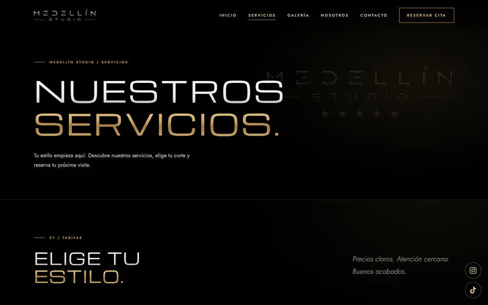

Medellín Studio
Web multipágina para una barbería de Madrid. Una propuesta oscura y cinematográfica, con contenido que el propio negocio puede actualizar y un recorrido directo hasta la agenda de reservas.
- Tipo
- Web multipágina para negocio local
- Mi rol
- Diseño y desarrollo web
- Tecnología
- HTML, CSS, JavaScript, Supabase
- Estado
- Publicada

La necesidad
Un estudio de barbería con una imagen muy marcada necesitaba una web a la altura de esa imagen: que se viera premium, que explicara bien los servicios y que no perdiera al cliente entre la portada y la reserva.
Qué se construyó
- Seis páginas con navegación claraInicio, Servicios, Galería, Nosotros, Contacto y Reservar cita, con la página activa marcada en el menú.
- Servicios y galería desde una base de datosAmbos se leen de Supabase, con las imágenes de la galería en Supabase Storage.
- Panel de administración privadoPágina fuera de buscadores para gestionar servicios y galería sin tocar el código.
- Página de reservas en tres pasosElegir servicio, consultar precios y continuar a la agenda, con aviso claro de que se abre una plataforma externa.
- Ubicación y redesMapa de Google integrado, enlace «Cómo llegar» y accesos fijos a Instagram y TikTok.
Cómo funcionan las reservas
La cita se reserva y se confirma en Booksy, no en esta web. La página de reservas enseña los servicios y precios para que el cliente llegue decidido y después le lleva a Booksy, donde elige el horario y completa la reserva. La web lo indica antes de salir.
Decisiones de diseño
Lo contrario de La Nota Barber: negro absoluto, tipografía geométrica muy espaciada y degradados metálicos en plata y oro. Secciones numeradas (01, 02, 03…) que ordenan la lectura como una revista.
Titulares a pantalla completa y mucho espacio negativo para que la fotografía y la marca tengan protagonismo.

Resultado observable
La web está publicada con sus seis páginas operativas. El negocio puede cambiar servicios y fotos desde el panel, y cada página termina en una llamada clara a reservar.